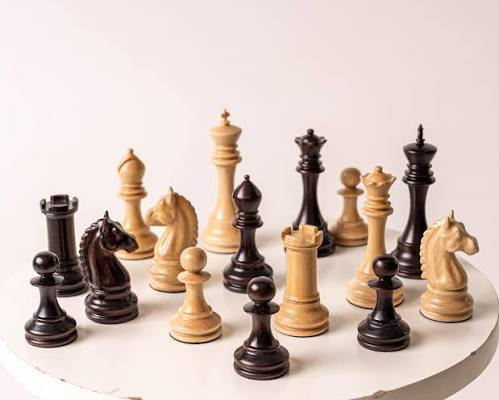
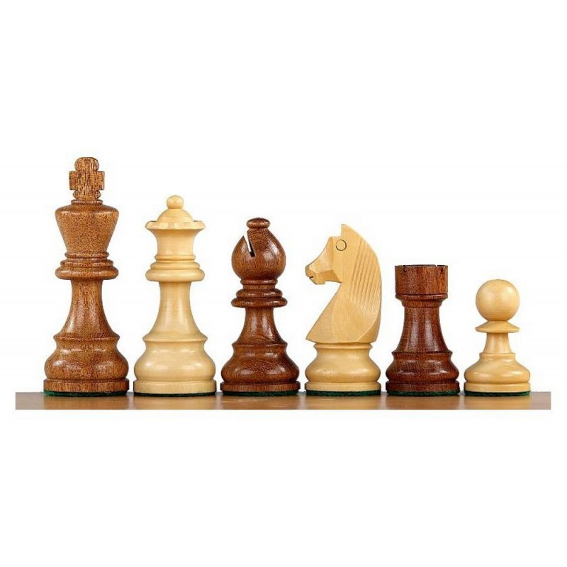

Цікаві факти про шахи
Факти
- Шахи вважають однією з найдавніших стратегічних ігор у світі — їхнім попередником була давньоіндійська
гра чатуранга, яка виникла приблизно у VI столітті.
- Слово «шах» походить від перського слова «шах» — «цар». Вислів «шах мат» приблизно означає
«цар переможений» або «цар без порятунку».
- Ферзь не завжди був найсильнішою фігурою. У стародавніх і середньовічних версіях шахів він мав
значно обмеженіші можливості пересування.
- Сучасний ферзь отримав свої надзвичайно широкі можливості пересування приблизно наприкінці XV століття,
що суттєво змінило характер гри.
- Кінь є єдиною шаховою фігурою, яка може перестрибувати через інші фігури. Саме тому він здатний робити ходи,
які недоступні більшості інших фігур.
-

- Теоретично шахова партія може бути дуже довгою. За сучасними правилами існують обмеження, які запобігають
нескінченному продовженню партії.
- На шахівниці 64 клітинки, причому половина з них світла, а половина темна. Такий формат дошки використовується
в сучасних шахах уже багато століть.
- У шахах можливі величезні кількості різних позицій. Кількість можливих шахових партій настільки велика, що її часто
порівнюють із числом, яке має приблизно 44 цифри — це відома оцінка, яку називають числом Шеннона.
- Перший офіційно визнаний чемпіон світу з шахів — Вільгельм Стейніц, який у 1886 році переміг Йоганна
Цукерторта в матчі за цей титул.
- Шахи сьогодні грають не лише люди. Комп'ютерні шахові програми здатні аналізувати величезну кількість варіантів
і використовуються професійними шахістами для підготовки та дослідження позицій.
